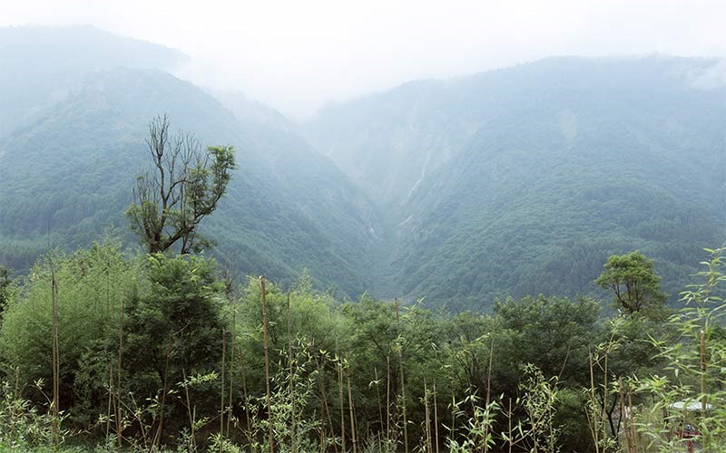

Caracteristicas:
- Chino: 'grande-oso-gato' (大熊猫dàxióngmāo /dah-sshyong-maow/)
- Clase: mamíferos (Mammalia)
- Orden: carnívora (Carnivora)
- Familla: Oso (Ursidae)
- Género: pies-gato (Ailuropoda)
- Especie: blanco y negro (melanoleuca)
- Tamaño: hasta 0.75m Tall, 1,5 m de largo (2.5 metros de altura, 5 pies de largo)
- Peso: hasta 150 kg (330 lb)
- Ciclo de vida: 15 a 20 años en el medio salvaje (hasta 30 años en cautividad)
- Reproducción: un cachorro por dos años; aparearse en primavera, dar la luz en verano
¿Dónde vive el oso panda?

Según el censo de 2014, solo hay 1.864 osos panda vivos en estado salvaje. Es una de las especies más raras y amenazadas del mundo, por lo que el oso panda fue seleccionado y utilizado como símbolo del WWF desde su formación en 1961.
Ahora, el único hábitat adecuado que queda para los osos panda se encuentra en grandes bosques de bambú en húmedo y relativamente alta de las laderas de montañas remotas, a unos 1.200 a 3.100 metros (4.000 a 10.000 pies) sobre el nivel del mar.
En la actualidad, el hábitat de los osos panda ha reducido drásticamente por el crecimiento de China y las prácticas agrícolas. Ahora la especie está restringida a sólo 20 parches aislados. Lea más detalles sobre el hábitat de los pandas.